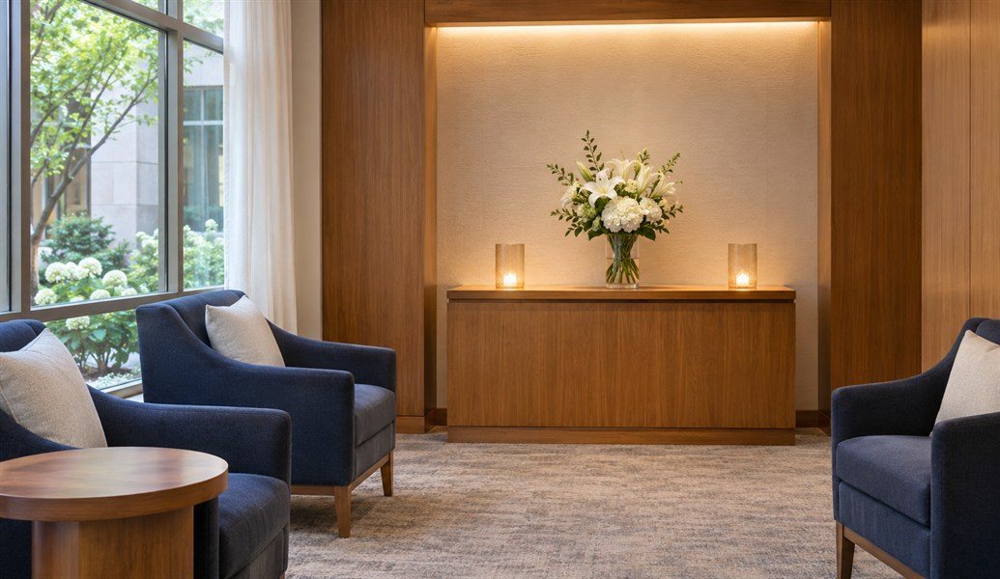
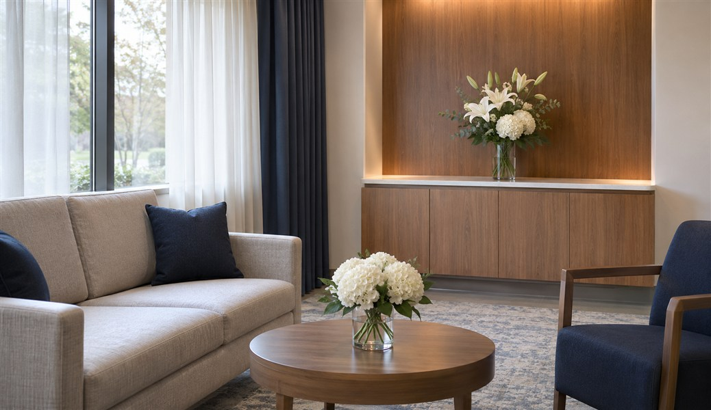

장례 시설
장례식장




빈소 면적
| 구분 | 면적 |
|---|---|
| 특실 | 100평 · 330㎡ |
| 별실 | 84평 · 277.2㎡ |
| 1호실 | 56평 · 184.8㎡ |
| 2호실 | 56평 · 184.8㎡ |
| 3호실 | 56평 · 184.8㎡ |
장례 절차
- 01빈소 선정빈소 선택
- 02운구운구 차량은 매일 시간 제한 없이 이용합니다.
- 03안치고인 안치·호실 배정
- 04분향실 계약장례 일정·분향실 임대차 계약
- 05상주 준비사망진단서나 사체검안서를 준비하고, 고인의 사진과 제단용 꽃·장의용품을 마련합니다.
- 06입관10:00~17:00 사고로 사망한 경우에는 검시필증이 필요한지 장례 안내실에 문의합니다.
- 07장지 이동종교 의식 · 운구 차량 · 장지 이동
이용 시 유의 사항
- 외부 음식물 반입은 제한합니다.
- 귀중품과 조의금은 직접 보관해 주세요.
- 입관 전에 사망진단서 또는 사체검안서를 제출해야 합니다.
- 입관에 필요한 관, 수의와 부속 용품은 미리 선택합니다.